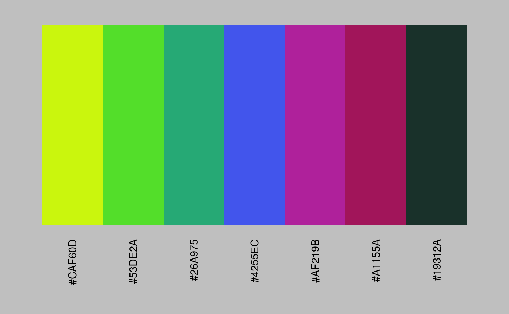
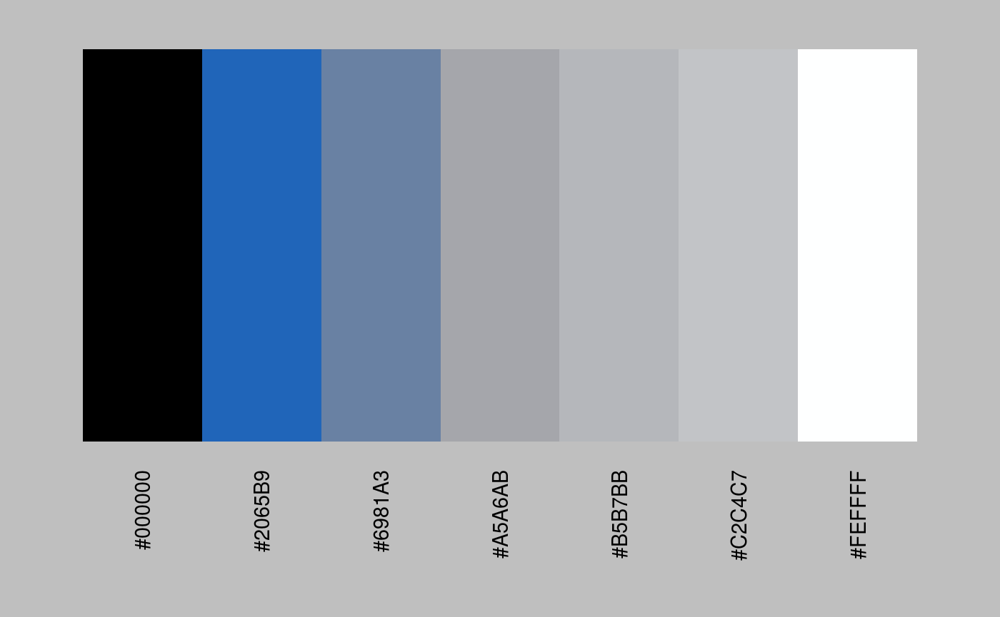
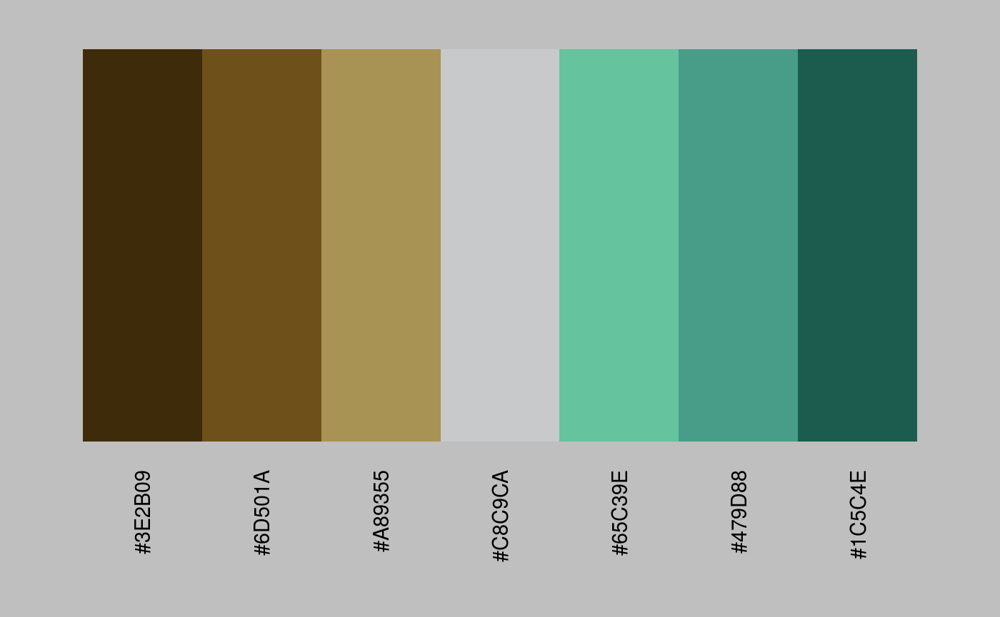

make_palette
This function will generate colour palettes of arbitrary size from an R base graphics color function, ColorBrewer named palette, COLOURLovers pallete ID or vector of named or hex colours. Also, a source image file (png or jpeg) or url can be used. Defaults to a nice Tableau-esque Orange->Blue divering or Stephen Few-esque Earth->Emerald...
make_palette(colour = NULL, n = 7, reverse = FALSE, shuffle = FALSE, default = TRUE)
Arguments
| colour | colour(s) to be turned into a palette |
|---|---|
| n | numeric the number of colours to be returned |
| reverse | logical should the return palette order be reversed? |
| shuffle | logical should the return palette be shuffled? |
| default | logical should default palette be Tableau-esque orange-blue diverging? |
Value
list object containing palette and plot
Examples
#> Error in eval(expr, envir, enclos): could not find function "colourgen"### COLOURlovers ID make_palette(colour = 3914747)#> $plot #> #> $palette #> [1] "#F22E2F" "#8D7676" "#29BFBD" "#94DFDE" "#FFFFFF" "#7F7F7F" "#000000" #>make_palette(colour = 987654)#> $plot #> #> $palette #> [1] "#131C3C" "#469AB3" "#77E0F3" "#A7EEFA" "#DCEFE2" "#ECE0B6" "#D6C176" #>### Custom Colour Vector my_colours <- c("#CAF60D", "#18D33A", "#4255EC", "#E60873", "#19312A") make_palette(colour = my_colours)#> $plot #> #> $palette #> [1] "#CAF60D" "#53DE2A" "#26A975" "#4255EC" "#AF219B" "#A1155A" "#19312A" #>### Sample Source Image make_palette(colour = "https://www.r-project.org/Rlogo.png")#> $plot #> #> $palette #> [1] "#000000" "#2065B9" "#6981A3" "#A5A6AB" "#B5B7BB" "#C2C4C7" "#FEFFFF" #>### Default Behaviour make_palette(default = TRUE)#> #> #>#> $plot #> #> $palette #> [1] "#7B3014" "#D04A07" "#F98C40" "#C8C9CA" "#5AA5CD" "#236CA7" "#26456E" #>make_palette(default = FALSE)#> #> #>#> $plot #> #> $palette #> [1] "#3E2B09" "#6D501A" "#A89355" "#C8C9CA" "#65C39E" "#479D88" "#1C5C4E" #>